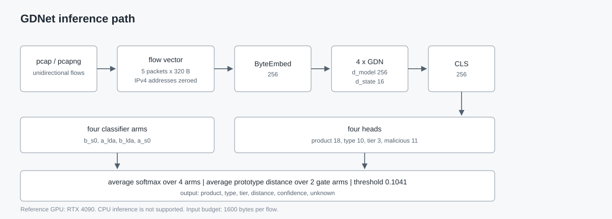

Luping QAQ，独立研究者
本文提出 GDNet，一个与内网流量探针配合的被动资产识别模型。探针旁路镜像内网流量，把每条流的前五个报文交给 GDNet；GDNet 抹掉 IPv4 地址，判断这条流由哪个安全设备、哪个终端安全产品或者哪款常用软件产生，无法判断时返回 unknown。整个过程不发包、不接触主机、不使用凭据，也不会在目标日志里留下记录，这是它与主动扫描的根本区别 [33]。输入是前五个报文拼成的 1600 字节定长向量，四个 Gated DeltaNet 块输出 256 维 CLS 特征，四个任务头与一个原型门控给出标签、类型、层级与拒识结果 [2], [4], [11]。在 503 条流的测试划分上，四臂集成取得 0.8787 的产品准确率、0.9245 的层级准确率和 0.9784 的门控 AUROC，18 个未知产品桶全部被拒识。发布内容还包括 42 KB 的单文件 C 探针、命令行工具、HTTP 服务，以及一条注册流程：只需三个子原型就能加入新产品，不必重新训练。关键词：被动资产发现；内网流量分析；流量探针；字节级分类；无分词器学习；Gated DeltaNet；开集识别；加密流量分析
内网资产清单通常靠两种方式重建。一种是问：配置管理、终端 Agent、部署工单。另一种是看：Nmap 一类的工具逐个地址发探测包，把响应和签名库比对，报出谁应答了 [33]。两种方式的代价都被低估了。主机一重装、Agent 一升级，记录就开始漂；扫描则很吵，会落进入侵检测日志，会扰动脆弱的工控设备，主机级细节往往还要凭据，而没人愿意把凭据交给扫描器。很多内网干脆禁止定期扫描，清单就这么放旧了。
另一条路是看流量。探针本来就旁路镜像着内网，汇聚端口上跑着每台重要主机的流量；它缺的只是一层判断——单看报文，能不能说清这条流是哪个安全设备、哪个终端 Agent 或者哪款常用软件发出的。GDNet 补的就是这一层。它从 18 个封闭标签里给出答案，标签分三层：安全设备、终端安全产品、常用软件。整个过程不往网络里注入任何东西，不接触任何主机，不使用任何凭据，清单是既有流量的副产品。
按端口和协议划分解决不了这个问题。本文的标签集是封闭的 18 个产品与服务，列在附录 A 并标注类型和层级，其中三个 VPN（wireguard、openvpn、stunnel）都允许自定义端口 [19]，三个 Web 面产品（squid_proxy、ntopng、guacamole_mgmt）默认占用 80 和 443，四个终端 Agent（windows_defender、clamav_freshclam、velociraptor、osquery）的升级流量走的是同一套 HTTPS 形态 [20], [21]。规则型指纹能从报文头特征判断操作系统 [17]、从载荷特征判断协议 [19]、从握手指纹判断 TLS 栈 [18]，学习型设备识别能从流统计判断设备类型 [20], [21]；两者都不输出封闭集里的产品标签，也都不提供在留出会话上标定的拒识选项 [11], [12]。
GDNet 用一个紧凑的字节级模型处理这个设定。输入是前五个报文拼成的 1600 字节，IPv4 地址置零 [1], [7]。编码器是四个 Gated DeltaNet 块，dmodel = 256、dstate = 16，单臂 2.86M 参数 [2], [3], [4]。分类器是四臂集成，共 11.44M 参数，磁盘占用 46 MB [1], [8], [9]。另有一个独立的原型门控决定产品头是否可信 [11], [12], [13]，系统因此输出产品标签、类型、层级、原型距离和置信度，或者在证据不足时输出 unknown。
设 P 为附录 A 中 18 个产品的封闭集合，T 为产品类型集合，G 为层级集合。对一条流 f，分类器返回五元组 (ŷ, t̂, ĝ, d, s)，其中 ŷ 属于 P 或为 unknown，t̂ 属于 T，ĝ 属于 G，d 为原型距离，s 为置信度 [11], [13]。拒识不是一个额外的输出类别，而是作用在「流嵌入到最近类原型距离」上的阈值 τ = 0.1041，取开发集距离的 68 分位 [12], [13]。训练过程因此不需要任何未知类样本，这一点很重要，因为一个网络里没有安装哪些产品，事先无法枚举 [5], [6]。
在这批 40,283 条标注流上，集成在 503 条流的测试划分上取得 0.8787 的产品准确率、0.9245 的层级准确率和 0.9784 的门控 AUROC，并拒识了接受集里全部 18 个未知产品桶 [14], [16]。采集探针是一个 42 KB 的单文件 C 程序，batch 128 下峰值显存 3.40 GB，单张 RTX 4090 即可跑完整条推理链 [28], [29]。同样的性质也带来敏感性：能枚举一台主机防御栈的人，可以选择绕过它的手法，因此第 VI-E 节专门说明发布约束 [14], [22]。
本文的贡献有四项。
被动识别的常规替代方案是主动扫描。Nmap 向每个地址发送构造好的探测包，把响应与签名库比对，报出开放端口、服务版本和操作系统猜测 [33]，漏洞扫描器把同一套模型延伸到配置与补丁级别。主动扫描能给出精确的主机级答案，代价是可见、偶有破坏性、且依赖扫描器到目标的可达性。被动识别拿精度换安静：不说话的宿主看不到，还没发过包的服务点不出名，但目标日志里不留痕迹，也不需要任何凭据。
规则型指纹比本文提到的任何学习型方法都早，而且今天仍在生产网络中运行。p0f 依据初始 TTL、窗口大小、TCP 选项顺序等报文头特征推断操作系统，靠一张人工签名表，不需要训练数据 [17]；nDPI 在链速下匹配载荷与头部模式划分协议 [19]；JA3 与 JA3S 把 TLS ClientHello 和 ServerHello 的字段散列成短字符串，用来识别客户端与服务端实现 [18]。学习型设备识别往前走了一步：IoT Sentinel 用报文头特征训练随机森林，在设备接入前判定设备类型 [21]；Sivanathan 等人在智慧园区与校园网流量上证明，仅凭流统计就能把设备类别分开 [20]。这些工作都停在操作系统、协议或设备类型，没有一个输出本文这样的封闭产品标签集，也没有一个提供拒识选项。
ET-BERT 先把数据报分词，再用掩码语言建模预训练 Transformer [7]；YaTC 把流画成图像，在图像块上预训练掩码自编码器 [8]；NetMamba 把单向 Mamba 主干用于报文序列 [9]。三者都需要在外部语料上做预训练，也都承袭了文本领域的字节级与子词约定 [5], [6]。MambaNetBurst 去掉了分词器和预训练阶段，用 2.7M 参数的紧凑 Mamba-2 堆栈直接从原始字节学习 [1]，是与本文最接近的架构参照。GDNet 保留它的字节词表、CLS 读出和定长突发约定，把混合器换成四个 Gated DeltaNet 块 [4]，在保持状态空间线性代价 [2], [3] 的同时，把 delta 规则引入状态转移。
netFound 从大规模 token 语料学习报文表示，报告冻结编码器的结果，并明确给出若干数据集的划分修正；其参数量约为单个 2.86M 参数 GDNet 臂的两个数量级 [10]。开集识别把拒识当作独立于分类的决策：softmax 置信度是糟糕的边界估计 [13]，到类原型的距离则是可标定的替代方案 [11], [12]。本文每类保留三个子原型，每条门控臂共 54 行原型，距离定义为一减去最大余弦相似度，τ 只在开发集上标定。
这一方向的评测实践被批评过两点，都与本文相关：按报文划分会把 TCP 序列号泄漏进测试集 [15]，报告里的提升有时来自捷径学习而不是任务本身 [14]，这也是为什么有人提出统一的对比协议 [16]。本文因此固定一套协议，所有选择都在开发半区完成之后才对测试半区打分一次，并随检查点一起发布评测脚本。
表 I. GDNet 在指纹识别、学习型分类与基础模型之间的位置。
| 方法 | 表示 | 分词器 | 预训练 | 序列模型 | 目标 |
|---|---|---|---|---|---|
| p0f [17] | TCP/IP 头部字段 | 无 | 无 | 签名表 | 操作系统 |
| nDPI [19] | 载荷 + 头部 | 无 | 无 | DPI 规则 | 协议 |
| JA3/JA3S [18] | TLS 握手字段 | 无 | 无 | 散列 | 客户端/服务端 |
| IoT Sentinel [21] | 头部特征 | 无 | 无 | 随机森林 | 设备类型 |
| ET-BERT [7] | 数据报 token | BERT 词表 | 掩码语言模型 | Transformer | 应用 |
| YaTC [8] | 流图像块 | 图像块 | 掩码自编码 | Transformer | 应用 |
| NetMamba [9] | 报文 token | 词表 | 自监督 | Mamba | 应用 |
| MambaNetBurst [1] | 原始字节 | 无 | 无 | Mamba-2 | 应用 |
| netFound [10] | 报文 token | 词表 | 大规模语料 | Transformer | 多任务 |
| GDNet | 原始字节 | 无 | 域内对比学习 | GDN | 安全产品 |
一条流被压成 1600 字节的定长向量：五个报文，每个最多 320 字节，其中前 80 字节是头部，后 240 字节是载荷；第 12 到 19 字节存放 IPv4 源目地址，在向量离开探针之前置零，端口、协议号、标志位和载荷内容全部保留 [1], [7]。
不足五个报文的流补零，超过的在同一 1600 字节边界截断；以太网、VLAN 和裸 IPv4 三种封装都接受；解析不在热路径上，因为探针在流的第五个报文到达时就交出了向量 [28]。五个报文的预算覆盖传输层握手和第一条应用消息，附录 A 的 18 个产品都在这一段里露出更新请求、证书或固定头部，而地址属于站点属性、不属于产品属性 [17], [19], [21]。
每个字节映射为 256 维嵌入，末尾追加一个可学习的 CLS token，加上位置信息后送入四个 GDN 块，最终 CLS 状态作为特征；只在训练期使用的域判别头以 strict=False 加载，推理时丢弃 [1], [4]。四个头合计约 0.4M 参数，占单臂 2.86M 的 14%，其余 86% 都在编码器里。恶意头在公开恶意流量上训练，结果单独报告，因为那个语料的采集条件与任何一个具体站点都不一致。
表 II. 单臂主干配置。
| 组件 | 取值 |
|---|---|
| 字节嵌入 | 256 |
| GDN 块 | 4 个，dmodel = 256，dstate = 16 |
| CLS token | 可学习，追加在最后一个字节之后 |
| 特征 | 最终 CLS 状态，256 维 |
| 状态字典条目 | 103 条，其中 52 条属于 GDN 块 |
| 单臂参数量 | 2.86M |
表 III. 四个任务头，合计约 0.4M 参数。
| 任务头 | 层结构 | 输出维度 | 是否进入主结果 |
|---|---|---|---|
| 产品 | 256-512-18 | 18 | 是 |
| 层级 | 256-3 线性 | 3 | 是 |
| 类型 | 256-512-10 | 10 | 是 |
| 恶意 | 256-512-11 | 11 | 单独报告 |

图 1. 单臂推理路径。
每类用 KMeans 在训练嵌入上生成三个原型，每条门控臂共 54 行原型。对于特征 f 与类 c 的原型集 Pc，距离与判定规则为
其中 s 是平均后的 softmax 向量，d̄ 是两条门控臂上的平均距离，τ = 0.1041 取开发集距离的 68 分位 [11], [12], [13]。余弦距离落在 [0, 2] 区间内，阈值因此是开发分布上的分位数而不是绝对相似度，换一个站点必须重新标定，因为阈值属于流量而不属于模型。
共训练六个臂：两个预训练轮次（A、B）与三种训练变体交叉，变体分别是标准多任务目标（S0）、按类先验做 logit 调整（LDA）、在对比项中加权难负样本（HN）。保留四个：A-S0、A-LDA、B-LDA、B-S0；A-HN 与 B-HN 的 AUROC 更高，但阈值一动门控距离就漂移，因此按稳定性而非准确率剔除 [1], [9]。平均不加权。
表 IV. 六个训练臂。发布的检查点使用同一标签的小写形式，例如 A-S0 对应 stage3_a_s0.pth。
| 臂 | 预训练轮次 | 训练变体 | 在发布中的角色 |
|---|---|---|---|
| A-S0 | A | 标准多任务 | 分类臂 |
| A-LDA | A | logit 调整 | 分类臂与门控臂 |
| B-LDA | B | logit 调整 | 分类臂与门控臂 |
| B-S0 | B | 标准多任务 | 分类臂 |
| A-HN | A | 难负样本加权 | 已剔除 |
| B-HN | B | 难负样本加权 | 已剔除 |
Gated DeltaNet 块对序列长度是线性的，单次前向代价为 O(L·dmodel·dstate)，L = 1,600 [2], [3], [4]；显存由激活而非权重主导，46 MB 参数对应 batch 128 下 3.40 GB 峰值显存。
算法 1：单条流的推理
输入：报文流，阈值 τ
臂集合 S = {A-S0, A-LDA, B-LDA, B-S0}
输出：产品、类型、层级、距离、置信度，或 unknown
1 采集一条单向流的前五个报文
2 x <- 1600 字节向量，第 12:20 字节置零
3 对 S 中每个臂 j：
4 e_j <- GDN_encoder_j(x) # 256 维 CLS
5 s_j <- softmax(product_head_j(e_j)) # 18 个 logit
6 s <- 各臂 s_j 的均值
7 d <- 两条门控臂上 1 - max cosine(e, prototype) 的均值
8 若 d <= τ：返回 argmax s、类型头、层级头、d、max s
9 否则： 返回 unknown、d
标注集包含 18 个类别的 40,283 条流，采集自实验主机与虚拟机，每个产品都按其正常的升级、遥测或管理路径施放流量，而不是用合成载荷 [7], [8], [30], [32]。划分发生在流级别而不是会话级别；每类恰好出现在一个留出会话中，因此测试数字描述的是那些会话，而不是一个新组织；14 个会话覆盖 18 个类别，是因为一次采集会话会在一台主机上同时跑多个产品 [14], [16]。
表 V. 数据、划分与训练配置。
| 项目 | 取值 |
|---|---|
| 类别 | 18 个产品与服务 |
| 标注流数 | 40,283 |
| 采集来源 | 实验主机与虚拟机 |
| 验证流数 | 1,006，来自 14 个留出会话 |
| 开发/测试划分 | 503 / 503，流级别 |
| 选择方式 | 阈值、检查点与集成只在开发集上确定 |
| 测试使用次数 | 一次 |
| 硬件 | 4 × RTX 4090，fp32 |
| 第一阶段 | 对比学习，NT-Xent，33,184 条仅训练流 |
| 第二阶段 | 多任务监督微调，60 轮 |
| 第三阶段 | REINFORCE，300 轮 |
| 参考环境 | Python 3.12，PyTorch 2.14 |
训练代码不在发布包内，因为它依赖实验数据的目录结构，换一个团队使用前需要清理；而发布的检查点、54 行原型、0.1041 阈值和评测脚本可以直接复现测试划分上的数字 [28], [29]。模型选择全部限制在 503 条流的开发半区，503 条流的测试半区只打分一次 [14], [16]。
训练分三段。第一段在 33,184 条仅训练流上优化 NT-Xent 对比目标 [23]；第二段加入域对抗项 [24]，优化器为 AdamW [26]，其默认超参沿自 Adam [27]；第三段用 REINFORCE 优化产品正确、类型正确与诚实拒识三项奖励 [25]。
可复现性分两半。发布的检查点、54 行原型、阈值和评测脚本，在评测划分可得的前提下能复现测试半区的数字；划分本身不分发，只因为它来自实验流量。探针到服务的链路在测试主机上 30 秒采集 99,888 条流，服务把容器管理类流量判为 unknown，这正是产品域之外的预期行为。
产品准确率统计完全正确的产品标签，层级准确率统计完全正确的层级标签。宏 F1 在至少有一条测试流的类别上取平均：
其中 C+ 就是该类别集合。门控 AUROC 把已知流与未知、新颖流放在一起比较 [12], [13]；未知拒识率统计被正确拒绝的未知产品桶占比；恶意宏 F1 在 USTC-TFC2016 测试集（1,242 条流）上计算 [15], [32]；准确率区间为 95% 置信度的 Wilson 区间。
表 VI. 封闭集准确率、门控质量与拒识。
| 指标 | 测试（503 条流） | Wilson ± | 全验证集（1006 条流） | Wilson ± |
|---|---|---|---|---|
| 产品准确率 | 0.8787 | 0.029 | 0.8817 | 0.020 |
| 层级准确率 | 0.9245 | 0.023 | 0.9334 | 0.016 |
| 宏 F1（有支撑类别） | 0.7621 | — | 0.8240 | — |
| 门控 AUROC | 0.9784 | — | 0.9820（开发集） | — |
| 未知拒识 | 18/18 | — | 18/18 | — |
| 恶意宏 F1（USTC） | — | — | 0.9702 | — |
| 恶意二分类 F1 | — | — | >0.994 | — |
产品头在测试半区取得 0.8787，在全验证集取得 0.8817；层级准确率分别为 0.9245 和 0.9334，门控 AUROC 为 0.9784 和 0.9820 [1], [9]。18 个未知产品桶在固定阈值 0.1041 下全部被拒识，且拒识率在 q = 0.64 到 q = 0.75 之间保持不变 [11], [12]；wireguard 只有一条测试流，一次错误就让该类在 1.0 和 0.0 之间跳动，因此测试半区的宏 F1 0.7621 不作为主指标 [14], [16]。全验证集的 0.8240 是更稳定的参照，恶意头在 1,242 条 USTC-TFC2016 测试流上取得 0.9702 宏 F1，二分类 F1 不低于 0.994 [15], [32]。
表 VII. 264 个产品桶与 18 个未知桶上的接受与注册表现。
| 项目 | 结果 |
|---|---|
| 产品桶 | 264 |
| 未知桶 | 18，全部拒识 |
| 原始集成判对的产品数 | 8/10 |
| 加入时间规则后判对的产品数 | 9/10，规则未发布 |
| stunnel 召回 | 所有阈值下 0/30 |
| wireguard | 2 个桶，视为噪声 |
| HTTP 服务，FLW1 记录 | 6/6 |
| smb 注册 | 注册三个子原型后 8/8 |
基于到达间隔的时间规则把接受数从 8 提到 9，但没有随版本发布，因为它是一个没有独立标定的第二模型；stunnel 是修不动的失败项，在试过的每个阈值上都是 30 个桶零命中；smb 在注册三个子原型后达到 8/8，说明机制本身可用，但补不上 stunnel 缺的数据。HTTP 服务在 FLW1 记录上返回 6/6 已知流，这是全文唯一一条走完整部署代码路径的端到端检查 [28], [29]。
表 VIII. 单张 RTX 4090、fp32 下的吞吐与显存，显存按 batch 128 测，延迟按 batch 1 测。
| 配置 | 吞吐 | batch 1 延迟 | batch 128 峰值显存 |
|---|---|---|---|
| 单臂 | 1,017 条流/秒 | 10.7 ms | 3.37 GB |
| 四臂集成 | 253 条流/秒 | 43.1 ms | 3.40 GB |
| 蒸馏学生 | 1,011 条流/秒 | 10.6 ms | 3.37 GB |
探针的采集速度高于集成 253 条流/秒的分类速度，因此部署上只有三条路：抽样、分片到多卡，或者按需分类；8 GB 卡在 batch 128 下仍有富余，峰值显存 3.40 GB [28], [29]。蒸馏学生达到 1,011 条流/秒、0.8231 的验证准确率，比集成低 5.6 个点，因此保持实验状态 [23]。
表 IX. 尝试过的变体与消融，以及每一项被放弃而不是继续调参的原因。
| 变体 | 结果 | 处置 |
|---|---|---|
| 辅助预训练（字段、顺序、重建） | 探针 +9.35 点；下游 E1 低于 E0+LDA | 未采用 |
| 时间规则 | 接受数 8 提到 9；邻近阈值不稳定 | 未发布 |
| 蒸馏 | 验证准确率 0.8231，比集成低 5.6 点 | 实验状态 |
| stunnel 阈值调参 | 所有阈值下 0/30 | 需要数据或注册 |
| 两个难负样本臂 | AUROC 更高，门控距离随 τ 漂移 | 剔除 |
辅助预训练原本是最被看好的一项：加入字段、顺序、重建三个目标后，探针分数提高 9.35 点，随后在下游输给朴素的 E0+LDA 流水线，说明代理指标变好不等于模型变好 [6], [23]。消融范围很窄，这一点明确写出：深度、宽度、状态维度、嵌入维度和报文预算都是按部署约束和 MambaNetBurst 参照一次性确定的，没有做扫描，算力投在了 264 个桶的接受集和端到端服务检查上 [1], [3]。
附录 A 里 18 个产品各自会在前五个报文内露出更新请求、证书、固定头部或版本串 [17], [19], [21]，接受集仅凭这个预算就判对 8/10；第六个报文之后承载的是用户的载荷，属于用户而不属于产品。
单臂 2.86M 参数、集成 11.44M 参数，折算 46 MB 磁盘占用、batch 128 下 3.40 GB 峰值显存，42 KB 的探针可以跑在没有 Python 运行时的容器里 [28], [29]；更大的模型大概率分数更高 [1], [10]，但这里的运行约束是那张同时跑分析师工具的 8 GB 卡。
门控在 τ = 0.1041 下拒识 18/18 个未知桶，且工作点在 q = 0.64 到 q = 0.75 之间稳定 [11], [12]；没有这层拒识，0.8787 的产品准确率会在遇到 18 类之外的流时把响应者引向一台根本没装那个软件的主机 [13], [22]。
划分是流级别、每类只有一个会话，绝对数字描述的是那 14 个会话 [14], [16]；503 条流的测试集在产品准确率上给出 ±0.029 的 Wilson 区间，宏 F1 在没有逐类计数的前提下给不出区间；只用了单一采集环境，跨站点行为未测 [14], [16]；标签集封闭在 18 个产品，静默升级、不产生特征流量的产品会被拒识或误判；没有做种子扫描。
发布包含 19 个权重文件、合计 94.6 MB、无抓包、带 SHA-256 校验和；工具会点名防御产品，因此只在有授权的环境运行，抓包不进入公开演示 [22]。输出是分数而不是判决，恶意头单独报告并排除在自动响应路径之外，输入不含地址，除字节模式外也不含载荷语义。
本文系统在 503 条流的测试划分上取得 0.8787 的产品准确率、0.9245 的层级准确率和 0.9784 的门控 AUROC，接受集 18 个未知产品桶全部拒识；模型 11.44M 参数，不使用分词器，流与训练集不相似时输出 unknown [1], [9]。真正决定可用性的是拒识和探针这两块：前者拦住错误标签，不让它走到响应者面前；后者让清单在没有接触任何一台主机的情况下被采集出来 [11], [12], [22]。
感谢 flash-linear-attention 提供 Gated DeltaNet 内核 [29]，也感谢公开基准的作者把数据集开放到可以独立核验的程度 [30], [31], [32]。
[1] G K Kulatilleke, S Layeghy, M Baktashmotlagh, M Portmann, "MambaNetBurst: direct byte-level network traffic classification without tokenization or pretraining," arXiv:260511034, 2026；[2] A Gu, T Dao, "Mamba: linear-time sequence modeling with selective state spaces," arXiv:231200752, 2023；[3] T Dao, A Gu, "Transformers are SSMs: generalized models and efficient algorithms through structured state space duality," Proc ICML, 2024；[4] S Yang, J Kautz, A Hatamizadeh, "Gated delta networks: improving Mamba2 with the delta rule," Proc ICLR, 2025；[5] A Vaswani et al, "Attention is all you need," Proc NeurIPS, 2017；[6] L Xue et al, "ByT5: towards a token-free future with pre-trained byte-to-byte models," TACL, vol 10, 2022；[7] X Lin, G Xiong, G Gou, Z Li, J Shi, J Yu, "ET-BERT: a contextualized datagram representation with pre-training transformers for encrypted traffic classification," Proc WWW, 2022；[8] R Zhao, M Zhan, X Deng, Y Wang, Y Wang, G Gui, Z Xue, "YaTC: a masked autoencoder for flow images," arXiv:230519077, 2023；[9] NetMamba: efficient traffic classification with a pre-trained unidirectional Mamba, arXiv:240511886, 2024；[10] netFound: a foundation model for network security, arXiv:231017025, 2023; revised 2026；[11] J Snell, K Swersky, R Zemel, "Prototypical networks for few-shot learning," Proc NeurIPS, 2017；[12] W J Scheirer, A de Rezende Rocha, A Sapkota, T E Boult, "Toward open set recognition," IEEE TPAMI, vol 35, no 7, 2013；[13] A Bendale, T E Boult, "Towards open set deep networks," Proc IEEE CVPR, 2016；[14] N Jacobs et al, "AI/ML for network security: the emperor has no clothes," Proc ACM CCS, 2022；[15] R Zhao et al, "The sweet danger of sugar: the pitfalls of pcap-based encoders," Proc ACM SIGCOMM, 2025, arXiv:250716438；[16] NetBench: a benchmark for network traffic classification, Proc ACM FMSys, 2024；[17] M Zalewski, "p0f v3," https://lcamtufcoredumpcx/p0f3/；[18] J Althouse, "TLS fingerprinting with JA3 and JA3S," Salesforce Engineering, 2017；[19] L Deri, M Martinelli, T Bujlow, A Cardigliano, "nDPI: open-source high-speed deep packet inspection," Proc IEEE IWCMC, 2014；[20] A Sivanathan, H H Gharakheili, F Loi, A Radford, C Wijenayake, A Vishwanath, V Sivaraman, "Characterizing and classifying IoT traffic in smart cities and campuses," Proc IEEE INFOCOM Workshops, 2017；[21] M Miettinen, S Marchal, I Hafeez, N Asokan, A-R Sadeghi, S Tarkoma, "IoT Sentinel: automated device-type identification for security enforcement in IoT," Proc IEEE ICDCS, 2017；[22] R Sommer, V Paxson, "Outside the closed world: on using machine learning for network intrusion detection," Proc IEEE S&P, 2010；[23] T Chen, S Kornblith, M Norouzi, G Hinton, "A simple framework for contrastive learning of visual representations," Proc ICML, 2020；[24] Y Ganin et al, "Domain-adversarial training of neural networks," JMLR, vol 17, no 59, 2016；[25] R J Williams, "Simple statistical gradient-following algorithms for connectionist reinforcement learning," Machine Learning, vol 8, 1992；[26] I Loshchilov, F Hutter, "Decoupled weight decay regularization," Proc ICLR, 2019；[27] D P Kingma, J Ba, "Adam: a method for stochastic optimization," Proc ICLR, 2015；[28] A Paszke et al, "PyTorch: an imperative style, high-performance deep learning library," Proc NeurIPS, 2019；[29] flash-linear-attention, https://githubcom/fla-org/flash-linear-attention；[30] G Draper-Gil, A H Lashkari, M S I Mamun, A A Ghorbani, "Characterization of encrypted and VPN traffic using time-related features," Proc ICISSP, 2016；[31] A H Lashkari, G Draper-Gil, M S I Mamun, A A Ghorbani, "Characterization of Tor traffic using time-based features," Proc ICISSP, 2017；[32] W Wang, M Zhu, J Wang, X Zeng, Z Yang, "End-to-end encrypted traffic classification with one-dimensional convolution neural networks," Proc IEEE ISI, 2017；[33] G F Lyon，Nmap Network Scanning: The Official Nmap Project Guide to Network Discovery and Security Scanning，Insecure Com LLC，2009。
表 X. 作为封闭标签集的 18 个产品与服务，含类型与层级。
| 产品 | 类型 | 层级 |
|---|---|---|
| windows_defender | 杀毒 | 安全软件 |
| clamav_freshclam_win | 杀毒 | 安全软件 |
| clamav_freshclam | 杀毒 | 安全软件 |
| velociraptor | EDR / HIDS | 安全软件 |
| velociraptor_win | EDR / HIDS | 安全软件 |
| osquery | EDR / HIDS | 安全软件 |
| wazuh_agent | EDR / HIDS | 安全软件 |
| wireguard | 零信任 / VPN | 安全设备 |
| openvpn | 零信任 / VPN | 安全设备 |
| stunnel | 零信任 / VPN | 安全设备 |
| squid_proxy | 上网行为管理 | 安全设备 |
| ntopng | NDR | 安全设备 |
| guacamole_mgmt | 堡垒机 | 安全设备 |
| waf_modsecurity | WAF | 安全设备 |
| suricata_update | NDR | 安全设备 |
| web_http | 浏览器 | 常用软件 |
| ssh | 远程管理 | 常用软件 |
| ftp | 文件传输 | 常用软件 |
发布内容中没有任何抓包：权重在实验流量和公开基准的训练划分上训练，校验和让任何读者都能核对实际加载的是哪些文件 [29]。